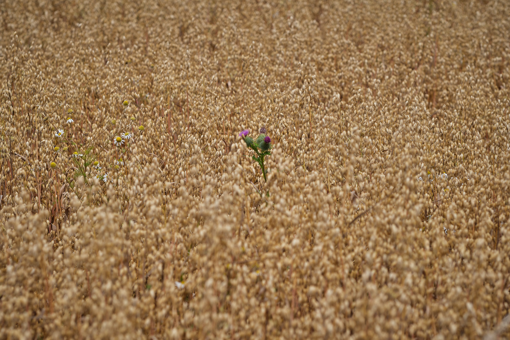

Dumbarnie and Pittenweem
Where we live in Fife, we are very lucky indeed to have easy access to some of the most delightful coastal towns and villages anywhere in Britain. Earlier this week, we decided to take a hurl up to Dumbarnie Links, a long beach to the East of Largo. We parked at Drumeldrie and walked down the farm track to where it joins the Fife Coastal Path.

The fields are busy and well used in this part of the world. Walking along the pathways between them, it is the exceptions that stand out. The rogue thistle or poppies that spring up between the cash crops are not unwelcome, of course. The thistle, a national emblem, is loved as much by the people as the pollenators.
Poppies are, for several generations, the great reminder of what was lost a century ago in The Great War and in conflicts since. Nevertheless, they are welcome throughout this time of year and will, as always, be symbolic as we move towards November.

We have seen purple blankets across the countryside recently, and have learned that these are Lacy Phacelia, a “green manure” that is planted to improve the soil. Our farmers look to the future and farm responsibly and I am thankful they do.
The colours of the Fife countryside are breathtaking, and especially when enhanced by the gentle buzzing of the bees; the calls of raptors in the sky and of yellowhammers flitting along the hedgerows.
The journey home was interrupted by a visit to Pittenweem for the best fish and chips you can find anywhere, and an ice cream stroll along the harbour.
Like many harbours along the East Neuk, Pittenweem is endearing, remembers its own history, and sits comfortably alongside the native wildlife with which it is symbiotic.
Apart from the alliteration, I like this stitch of two images taken from the walk up to the car park ovelooking the bay from the South. You get a sense of the changing weather, I think. It wasn’t cold but there was that uncertainty of July in Scotland, where you never quite know what to wear on an outdoor trip. No complaints, though, and it could certainly have been worse; climate change affects us all now.